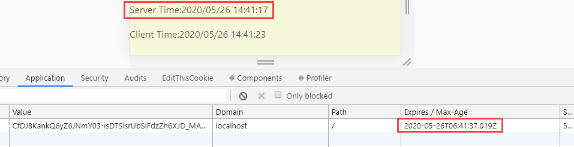
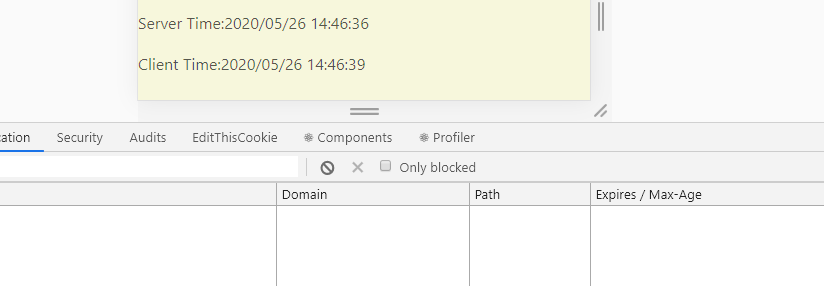

透過.net Core identity 實作身份認證
透過身分認證機制，我們可以讓沒有認證過的人拒絕訪問我們的網站，下面的練習是參考Authentication with ASP.NET Core Identity 實作，有興趣的人可以觀看原文
設定.net core app 1 2 services.AddAuthentication(CookieAuthenticationDefaults.AuthenticationScheme).AddCookie();
1 2 app.UseAuthentication();
禁止未經授權的用戶訪問 建立一個資訊頁，顯示登入人員的基本資料，這個頁面如果沒有登入系統是不允許訪問的，套用[Authorize]即可
1 2 3 4 5 6 7 8 9 [Authorize ] public ActionResult Secret ( return View(); }
1 2 3 4 5 6 <h2 > Claim details</h2 > <ul > @foreach (var claim in User.Claims) { <li > <strong > @claim.Type</strong > : @claim.Value</li > } </ul >
建立登入頁面 1 2 3 4 5 6 7 8 9 10 11 12 13 14 15 16 17 18 19 20 21 [HttpGet ] public IActionResult Login (string returnUrl = null ViewData["ReturnUrl" ] = returnUrl; return View(); } [HttpPost ] public async Task<IActionResult> Login (LoginFormViewModel loginForm ) return View(); }
登入表單 ViewModel
1 2 3 4 5 6 7 8 9 10 11 12 13 14 15 16 17 18 19 20 21 22 23 24 25 public class LoginFormViewModel { [MaxLength(100, ErrorMessage = "帳號長度不可多於100字元" ) ] [Required(ErrorMessage = "請輸入帳號" ) ] public string LoginID { get ; set ; } [Required(ErrorMessage = "請輸入密碼" ) ] [DataType(DataType.Password) ] [JsonIgnore ] public string Password { get ; set ; } public string ReturnUrl { get ; set ; } }
登入頁面 Html
1 2 3 4 5 6 7 8 9 10 11 12 <div id ="app" > <form asp-action ="Login" method ="post" asp-route-returnUrl ="@ViewData[" ReturnUrl "]"> <h2 > JoPE Member Login Page</h2 > <label for ="loginId" > 帳號</label > <input type ="text" id ="loginId" name ="loginId" placeholder ="請輸入帳號" autocomplete ="off" /> <label for ="password" > 密碼</label > <input type ="text" id ="password" name ="password" placeholder ="請輸入密碼" autocomplete ="off" /> <input type ="submit" value ="登入" /> </form > </div >
登入邏輯 1 2 3 4 5 6 7 8 9 10 11 12 13 14 15 16 17 18 19 20 21 22 23 24 25 26 27 28 29 30 31 32 33 34 35 36 37 38 39 40 41 42 43 44 45 46 [HttpPost ] public async Task<IActionResult> Login (LoginFormViewModel form ) if (!ModelState.IsValid) { return View(loginForm); } var user = await MemberModule.FindByLoginId(form.LoginID); if (user != null && await MemberModule.CheckPassword(user, form.Password)) { var identity = new ClaimsIdentity(CookieAuthenticationDefaults.AuthenticationScheme); identity.AddClaim(new Claim(ClaimTypes.NameIdentifier, user.Id.ToString())); identity.AddClaim(new Claim(ClaimTypes.Name, user.Name)); var authProperties = new AuthenticationProperties { AllowRefresh = true , ExpiresUtc = DateTimeOffset.UtcNow.AddMinutes(15 ), IsPersistent = true , }; await HttpContext.SignInAsync( CookieAuthenticationDefaults.AuthenticationScheme, new ClaimsPrincipal(identity), authProperties); return RedirectToLocal(form.ReturnUrl); } return View(loginForm); } private IActionResult RedirectToLocal (string returnUrl if (Url.IsLocalUrl(returnUrl)) return Redirect(returnUrl); else return RedirectToAction(nameof (HomeController.Index), "Home" ); }
Cookie 過期 透過上述的機制，進行使用者登入動作的話，會在 Client 端產生一個名稱為.AspNetCore.Cookies的 cookie，內容經過編碼，透過瀏覽器開發者工具可以看到，有一欄是 Cookie 的 Expires / max-age，可以理解為，超過這個時間，這份資料就沒有用了
關於 Cookie 的更多資訊，可以參考 MDN 的說明
這邊要測試的是 Cookie Expires 的這件事情，在上一段使用者登入呼叫的程式片段中，可以看到我們設定了 Cookie 的過期時間為 15 分鐘，此處為了測試，我將它設定為，登入之後 20 秒，沒有其他的操作行為就會自動移除 Cookie
1 2 3 4 5 6 7 8 9 10 11 var authProperties = new AuthenticationProperties{ AllowRefresh = true , ExpiresUtc = DateTimeOffset.UtcNow.AddSeconds(20 ), IsPersistent = true , }; await HttpContext.SignInAsync( CookieAuthenticationDefaults.AuthenticationScheme, new ClaimsPrincipal(identity), authProperties);
然後我在後端取得DateTime.now送給前端顯示，所以可以看到系統登入的時間，從後端取得的時間，再加上 20 秒，就等於我們看到 Cookie 資訊的 Expires 的值

此處 cookie 的時間是 GMT time , 所以要自行轉為 UTC+8 來比較
在這 20 秒當中都沒有跟網站後端溝通的話，那麼 Cookie 就會自動被清掉，這表示 client 端已經沒有使用者的資訊了，所以也就代表著將使用者登出系統了

CookieAuthenticationOptions.ExpireTimeSpan 如果有注意到的話，我們在startup.cs也可以設定這個參數
1 2 3 4 5 6 7 8 9 public void ConfigureServices (IServiceCollection services ) services.AddAuthentication(CookieAuthenticationDefaults.AuthenticationScheme).AddCookie(option => { option.ExpireTimeSpan = TimeSpan.FromMinutes(60 ); }); }
大概可以想成我希望用戶最少在一個月之內重新登錄一次 ，嗯，這就是這個屬性可以拿來利用的情境，這個參數的解釋 我看的不是很懂，於是我搜尋了一下，發現了一篇文章:How to set asp.net Identity cookies expires time 來解釋這個屬性
這篇文章的解答如下
1 2 3 4 5 6 7 8 9 10 11 12 13 14 15 16 17 18 19 20 21 22 23 public override async Task SignInAsync (ApplicationUser user, bool isPersistent, bool rememberBrowser ) var userIdentity = await CreateUserIdentityAsync(user).WithCurrentCulture(); AuthenticationManager.SignOut(DefaultAuthenticationTypes.ExternalCookie, DefaultAuthenticationTypes.TwoFactorCookie); if (rememberBrowser) { var rememberBrowserIdentity = AuthenticationManager.CreateTwoFactorRememberBrowserIdentity(ConvertIdToString(user.Id)); AuthenticationManager.SignIn(new AuthenticationProperties { IsPersistent = isPersistent }, userIdentity, rememberBrowserIdentity); } else { if (isPersistent) { AuthenticationManager.SignIn(new AuthenticationProperties { IsPersistent = true }, userIdentity); } else { AuthenticationManager.SignIn(new AuthenticationProperties { IsPersistent = true , ExpiresUtc = DateTimeOffset.UtcNow.AddMinutes(30 ) }, userIdentity); } } }
這篇文章提供了一個很好的解決方案，但我們要關注的重點其實是：在預設情況下程式會使用startup.cs裡面設定的ExpireTimeSpan；但如果我們自行設定了ExpiresUtc，就會以我們設定的值為主。
換句話說，如果情境較簡單，你可以只考慮 ExpiresUtc 屬性這件事情就好，然後在登入的 SignInAsync 的判斷就直接用本文提到的方式處理即可